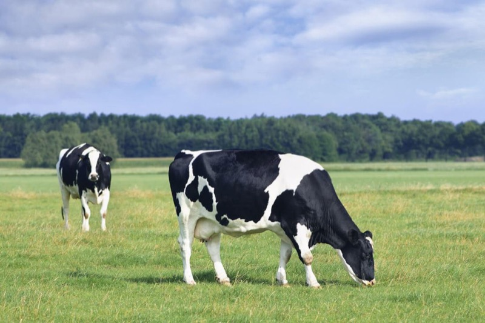

Descubre cada especie
Entra por categoría y encuentra únicamente las razas del animal que te interesa.
Enciclopedia veterinaria
Cargando enciclopedia...

Información clara para descubrir razas, conocer sus necesidades y consultar contenido veterinario detallado.
Entra por categoría y encuentra únicamente las razas del animal que te interesa.
Origen, características, alimentación, cuidados y aptitudes en una ficha visual.
Síntomas, diagnóstico, prevención y protocolos clínicos con enfoque veterinario.
Más de 500 términos: enfermedades, exámenes, fármacos, síntomas y conceptos de cada ficha clínica.
Calculadora RER/MER, índice de toxicología y calendarios de vacunación para consulta rápida en campo.
Mapa cruzado de condiciones hereditarias por raza: filtra por especie o enfermedad y accede a cada ficha.
Selecciona una categoría para ver solo las razas que pertenecen a ella.
Busca una raza o enfermedad en toda la enciclopedia.
Búsqueda general por nombre. Atajo: Ctrl+K
Cargando razas...
Cargando glosario...
Señales de alerta y emergencias frecuentes por tipo de animal. Si observas estos signos, consulta a un profesional de inmediato.
Calculadoras y referencias rápidas para estudiantes y profesionales. Uso educativo exclusivamente.
Estima el requerimiento energético en reposo (RER) y el mantenimiento (MER) según el estado fisiológico del animal.
Estima volúmenes de mantenimiento diario y bolos de reanimación orientativos según especie. Referencia educativa basada en guías clínicas veterinarias.
Conversiones frecuentes en consulta: masas, dosis por peso, temperatura y gotas por mililitro.
Cruza las predisposiciones documentadas en las 431 razas del atlas. Filtra por categoría animal o por condición genética.
Cargando...
Escala de condición corporal para evaluar grasa y masa muscular. Perros y gatos: 1–9; equinos: 1–5. Referencia educativa WSAVA / Henneke.
Repasa términos médicos: muestra el término, revela la definición y marca tu progreso. El avance se guarda en este dispositivo.
Cargando...
Selecciona un síntoma para ver posibles causas educativas, nivel de gravedad orientativo y cuándo consultar a un veterinario. No es un diagnóstico automático.
Compara hasta 3 razas lado a lado: origen, peso, temperamento, nutrición y salud.